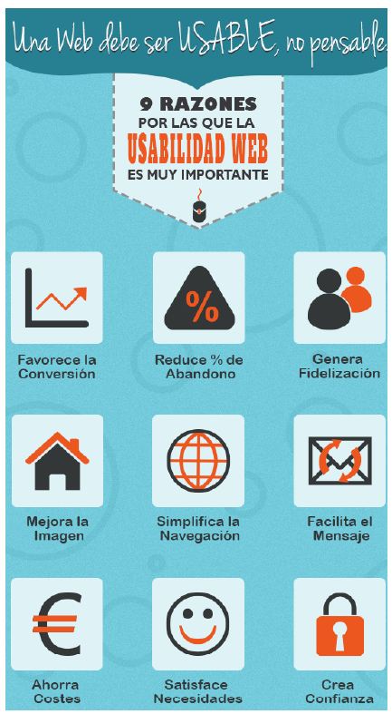
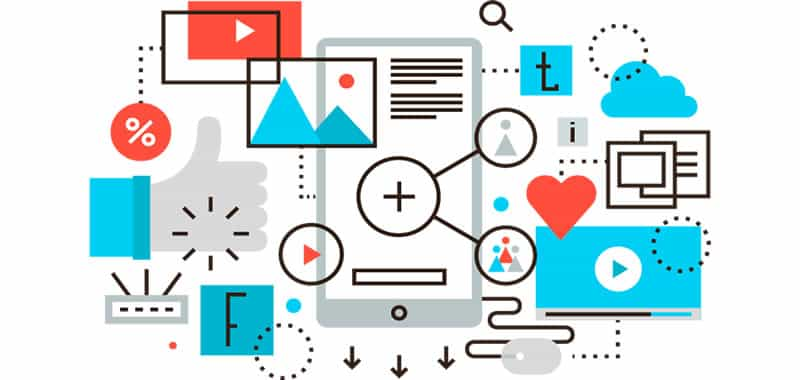

Concepto de usabilidad
La usabilidad web es el grado de facilidad de uso que tiene una página web para los visitantes que entran e interactúan con ella.
Evaluación de la usabilidad
A la hora de evaluar la usabilidad web de un sistema, debemos tener en cuenta las siguientes caracteríssubindiceas:
1. Facilidad de aprendizaje: se trata de que el usuario sepa cómo utilizar el sistema al que se enfrenta por primera vez.
2. Eficiencia: cuando la interfaz ya es conocida, debemos lograr que el usuario obtenga todo el potencial de la herramienta de manera eficiente.
3. Memorabilidad: el diseño de un sitio web debe facilitar el recuerdo del usuario. Esto significa que, cuando vuelva a visitarlo después de un
tiempo, pueda navegar con soltura.
4. Errores: hay que ansubindiceiparse a los posibles errores que puede presentar el sistema.
5. Satisfacción: si el usuario queda satisfecho después de su uso, es una buena señal.

Directrices y consejos de usabilidad
Principales directrices de usabilidad web
1. La calidad del diseño de un sitio web es un indicador de credibilidad
Múltiples estudios defienden que las personas no empleamos criterios rigurosos a la hora de juzgar un sitio web y que el diseño es la primera prueba en la credibilidad de un sitio web por encima incluso de la información fiable y de calidad.
2. El scroll
Con la aparición de los móviles no queda más remedio que hacer scroll en casi cualquier web y los usuarios se han acostumbrado a ello. Esto no quiere decir que no debamos ubicar cosas como el logo, el menú de navegación o el propósito del sitio en la parte superior y más visible.
3. El azul sigue siendo el mejor color para los enlaces.
Desde que Sir Tim Berners-Lee creó las primeras páginas de hipertexto y eligió el color azul para los enlaces de forma aparentemente aleatoria, esta directriz se ha impuesto como norma. El color azul es uno de los menos problemásubindiceos para las personas con deficiencias de visión, de forma que casi todo el mundo puede ver el azul o más exactamente, casi todo el mundo es capaz de distinguir el azul como un color diferente de los demás.
4. El espacio en blanco mejora la comprensión.
Este elemento no visible tiene un fuerte impacto en la UX. Si quieres que algo destaque añade espacio en blanco alrededor.
5. Los usuarios no ven la publicidad
La ceguera publicitaria dicta que la mayoría de nosotros ignoramos consciente o inconscientemente la información que se nos muestra en forma de banners. Por esto debemos evitar el uso de cualquier técnica que haga parecer que un bloque es un anuncio.
6. La regla de Pareto también se aplica en internet
El 20% de tus usuarios generaran el 80% del beneficio, sea cual sea éste.. compras, envíos de formularios, comentarios..
7. Tres clicks siguen siendo el máximo permitido.
Los usuarios deben encontrar lo que buscan sin superar los 3 clicks dentro de un sitio web. Esta regla es especialmente importante en tiendas online.
8. Los humanos sólo pueden retener a la vez entre 5 y 9 cosas en la memoria a corto plazo.
El mísubindiceo principio del 7 más o menos 2, se ha aplicado desde comienzos de los 90 para limitar el número de 3tems de un menú de navegación a 7. Esta regla se puede aplicar también a otros elementos del sitio como bloques de información o categorías.
9. El tiempo de carga es inversamente proporcional a la satisfacción de un usuario
Otro principio clásico, conocido como la regla del segundo segundo, antiguamente se decía que un usuario no debería esperar más de dos segundos para obtener algún resultado de sus acciones como la carga de una página o similar.
10. Los menús de navegación "Off canvas" no son sólo para móviles
Desde que Facebook creara el primer menú de navegación offcanvas, los usuarios han ido acostumbrándose a ellos y hoy día empiezan a ser un estándar no sólo en móviles sino en cualquier resolución de pantalla.
Principales consejos de usabilidad
➢ Identidad clara
Es muy importante que tengas claro desde el principio el mensaje que quieres transmitir y que este llegue al usuario de manera clara y concisa. La persona que acceda a tu página web tiene que encontrar fácilmente quién eres y qué estás ofreciendo.
➢ Buena accesibilidad
im Berners-Lee, creador de la World Wide Web, definió como aspecto esencial el hecho de que cualquier persona pudiera acceder a una web, independientemente de la discapacidad que presentara. Una buena accesibilidad consiste en que los usuarios, tengan el conocimiento que tengan, puedan acceder y entender la página web sin problemas.
Otros dos aspectos fundamentales de la accesibilidad es la velocidad de carga y la seguridad del sitio. Si tu web es lenta y tarda en cargar, hay más posibilidades de que los usuarios la abandonen. Por otro lado, si tu sitio aparece como “no seguro”, tus potenciales clientes no se fiarán de dejar sus datos personales.
➢ Navegación sencilla
El poder navegar de manera intuitiva desde el primer momento que entran en tu página web es muy importante para que los usuarios se sientan cómodos explorando y deseen volver. Un ejemplo muy claro de navegación fluida es poder acceder fácilmente a la página de inicio o a la página anterior.
➢ Diseño limpio y atractivo
Para enamorar a los usuarios es imprescindible que el diseño de tu web sea atractivo e intuitivo. Contar con una interfaz que llame la atención de tu público objetivo y permita encontrar lo que buscan de manera sencilla, te aportará mayores probabilidades de éxito.
Además, tener un diseño basado en la filosofía de tu negocio y con el que tus usuarios puedan sentirse identificados te ayudará a crear una identidad de marca sólida.
➢ Se responsive
Otro punto importante de la usabilidad web es saber qué tipo de dispositivo utilizan los usuarios para acceder a tu web. Actualmente, el ordenador ha dejado de ser el medio principal para navegar por internet, y por esta razón debes asegurarte de que tu página web se adapta a cualquier tipo de pantalla y de esta manera poder ofrecer la mejor experiencia de usuario posible. Esta técnica de diseño web se conoce como responsive.
Cuando hablamos de adaptar una web a cualquier tipo dispositivo, estamos hablando de la metodología mobile first, que consiste en crear un sitio web pensando primero en los dispositivos móviles y después adecuarlo a las pantallas grandes.
➢ Fomenta la interaccióne
Para conseguir que el usuario interactúe con tu página web, y vaya a parar a la sección que te reporta conversiones, debes guiarle a través de mensajes claros y atractivos, además de introducir botones que llamen a la acción o CTA (Call To Action).
Como has podido ver, la usabilidad web es clave para mejorar la visibilidad de tu negocio y el hecho de brindar una buena experiencia a tus usuarios hará que quieran volver, incrementando así las posibilidades venta.
Beneficios de cumplir con las directrices y consejos de usabilidad

• Principales beneficios para mejorar la usabilidad web:
- Mejorar la experiencia y satisfacción de los visitantes.
- Lograr una mayor comunicación y feedback con el usuario.
- Conseguir más tráfico.
- Aumentar la duración de las
visitas.
- Disminuir el porcentaje de rebote.
- Fidelizar a los usuarios, logrando que nos vuelvan a visitar la web.
- Facilitar que los usuarios recomiende en la web, generando más visitas adicionales.
- Lograr que el usuario se familiarice antes con la página y que su manejo sea fácil e intuitivo.
- Aumentar los ingresos y las ventas a través de la página.
SEO, posicionamiento de los motores de búsqueda.

El posicionamiento en buscadores u optimización de motores de búsqueda es el proceso de mejorar la visibilidad de un sitio web en los resultados orgánicos de los diferentes buscadores. También es frecuente nombrarlo por su título inglés, SEO (Search Engine Optimization).
Aunque existen miles de factores en los que un motor de búsqueda se basa para posicionar una página u otra se podría decir que hay dos factores básicos;
• La autoridad es básicamente la popularidad de una web. Cuanto más popular sea más valiosa es la información que contiene. Este factor es el que un motor de búsqueda tiene más en cuenta dado que se basa en la propia experiencia del usuario. Cuanto más se comparta un contenido es que a más usuarios les ha parecido útil
• La relevancia es la relación que tiene una página frente a una búsqueda dada. Esto no es simplemente que una página contenga un montón de veces el término buscado (en los comienzos era así) si no que un motor de búsqueda se basa en cientos de factores on-site para determinar esto.
El SEO se puede dividir en dos grandes grupos:
• On-site: El SEO on-site se preocupa de la relevancia. Se asegura de que la web está optimizada para que el motor de búsqueda entienda lo principal, que es el contenido de la misma. Dentro del SEO On-site incluiríamos la optimización de keywords, tiempo de carga, experiencia del usuario, optimización del código y formato de las URLs.
• Off-site: El SEO off-site es la parte del trabajo SEO que se centra en factores externos a la página web en la que trabajamos. Los factores más importantes en el SEO off-site son el número y la calidad de los enlaces, presencia en redes sociales, menciones en medios locales, autoridad de la marca y rendimiento en los resultados de búsqueda, es decir, el CTR que tengan nuestros resultados en un motor de búsqueda. Seguro que estás pensando que todo esto está muy bien y que es muy interesante pero que tu está aquí para saber porque necesitas el SEO en tu web y que beneficios obtendrás si lo integras en tu estrategia online.
Una vez que ya sabemos qué es el SEO, hay que diferenciar en si seguimos o no las «recomendaciones» del motor de búsqueda. Black Hat SEO o White Hat SEO
• Black Hat SEO: EO: Se llama black hat al intento de mejorar el posicionamiento en buscadores de una página web mediante técnicas poco éticas o que contradicen las directrices del motor de búsqueda. Algunos ejemplos de Black Hat SEO son el Cloaking, Spinning, SPAM en foros y comentarios de blogs, o el Keyword Stuffing. El black hat puede proporcionar beneficios en el corto plazo, pero generalmente es una estrategia arriesgada, sin continuidad en el largo plazo y que no aporta valor.
• White Hat SEO: Consiste en todas aquellas acciones éticamente correctas y que cumplen las directrices de los motores de búsqueda para posicionar una página web e los resultados de búsqueda. Dado que los buscadores dan una mayor importancia a las páginas que mejor responden a una búsqueda del usuario, el White Hat comprende las técnicas que buscan hacer más relevante una página para los buscadores a través de aportar valor para sus usuarios.